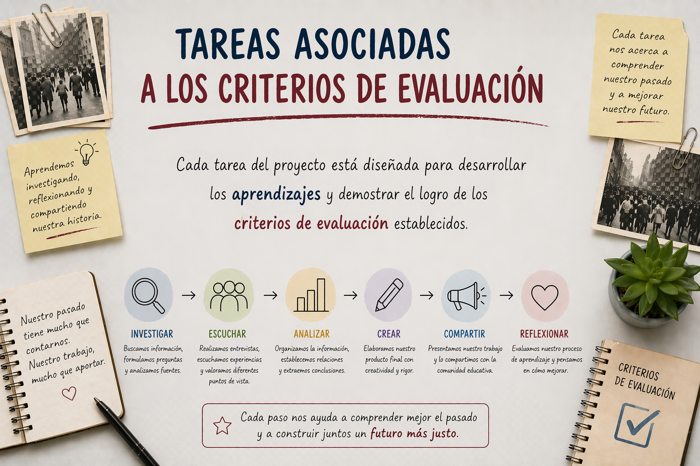

Asociamos tareas a criterios

En este apartado se presentan las tareas que conforman la situación de aprendizaje, vinculadas de manera directa con los criterios de evaluación establecidos para la materia de Geografía e Historia en 4.º de ESO. Esta relación permite asegurar que cada actividad contribuya al desarrollo de las competencias específicas y a la adquisición de los aprendizajes previstos. Asimismo, facilita al alumnado comprender qué se espera de su trabajo en cada fase del proyecto, promoviendo una mayor transparencia en la evaluación y favoreciendo un proceso de aprendizaje más consciente, estructurado y significativo.